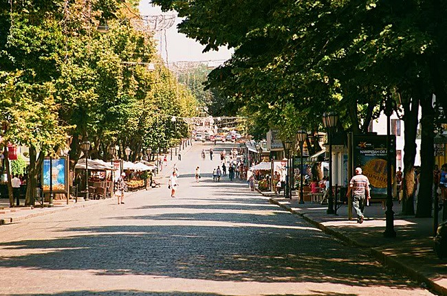

<>
Цікаві міся Одеси
- Тунель казок
- Пам'ятник Стіву Джобсу
- Палац Толстих
- Дерибасівська
- Приморський бульвар
Тунель казок
В Одесі є багато чудових місць, про які навіть не знають і самі одесити.
До таких належить і тунель, який з'єднує пляж
"Дельфін" та Французький бульвар. Його довжина становить близько 200 м, а максимальна глибина досягає 20 м, що майже
дорівнює висоті стандартного п'ятиповерхового будинку. Тут працюють два ліфти, які можуть підкинути Вас до моря або ж,
навпаки - до Французького бульвару. Проїзд в такому «метро» обійдеться Вам 5 гривень, а пільговики можуть навіть
скористатися певними знижками.
Свою назву тунель отримав через те, що його стіни прикрашають різні сюжети з казок Пушкіна, а також орнамент, який
зображає якір, з яким дуже люблять фотографуватися туристи міста. Тут Ви побачите цитати про море, що належать великим
класикам. Але таким красивим і яскравим тунель був не завжди. Колись його побудували виключно для потреб санаторію
"Магнолія" і він нічим не звертав на себе уваги. У свій час тунель не працював, відкрили його знову тільки в 2013 році.
Так що ми радимо Вам відвідати тунель відразу по приїзду в Одесу, а то невідомо, чи зможете Ви ще коли-небудь потрапити
в нього.
Пам'ятник Стіву Джобсу
Пам'ятник засновникові компанії "Apple" знаходиться на вулиці Новосельського. Виник він тут завдяки праці студентів
ОдесПам'ятник створений з безлічі дрібних деталей. Його автором виступив Кирило Максименко, якому для створення пам'ятника знадобилося трохи менше року. Вага скульптури в готовому вигляді досягає 230 кг, а його висота - до 2-х метрів. Вечірньої пори пам'ятник висвітлюється неоновим світлом, що надає йому якусь таємничість. Поруч з ним працює Wi-Fi (подейкують, що передавальний пристрій замасковано десь в самій руці).ької державної академії технічного регулювання та якості (колишній Вимірювальний технікум). Звели пам'ятник на честь
річниці смерті Стіва Джобса.
Пам'ятник створений з безлічі дрібних деталей. Його автором виступив Кирило Максименко, якому для створення пам'ятника
знадобилося трохи менше року. Вага скульптури в готовому вигляді досягає 230 кг, а його висота - до 2-х метрів.
Вечірньої пори пам'ятник висвітлюється неоновим світлом, що надає йому якусь таємничість. Поруч з ним працює Wi-Fi
(подейкують, що передавальний пристрій замасковано десь в самій руці).
Палац Толстих

Палац Толстих нині відомий як Будинок вчених. Майже все тут залишилося в первісному вигляді. Пишні інтер'єри, багате
оздоблення - все це просто притягує відвідувачів! Краса мармурового і білого залів, горіхової, шовкової і дубової
віталень заворожують. Кажуть, що іноді в білому залі палацу, який відводився під проведення балів, можна побачити привид
графині Толстої.
Дерибасівська

Добре відома на увесь світ Дерибасівська - саме серце Одеси. Кожен сам знаходить причину, через яку закохується в цю
вулицю:довжина і ширина у неї не дуже велика, але щось в ній є привабливе і спокійне, безтурботне і затишне - і в
архітектурі, і в безлічі кафе, і у відсутності машин...
Приморський бульвар

Приморський бульвар - як і Дерибасівська, улюблене місце для прогулянок гостей і корінних жителів міста, що протягом
півтора століття вважається одним з кращих містобудівних ансамблів в Європі. Звідси вам відкриється чудовий вид на
Морський вокзал і порт.